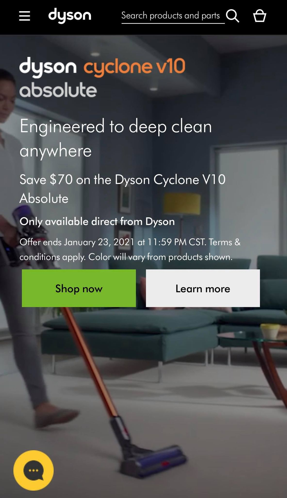
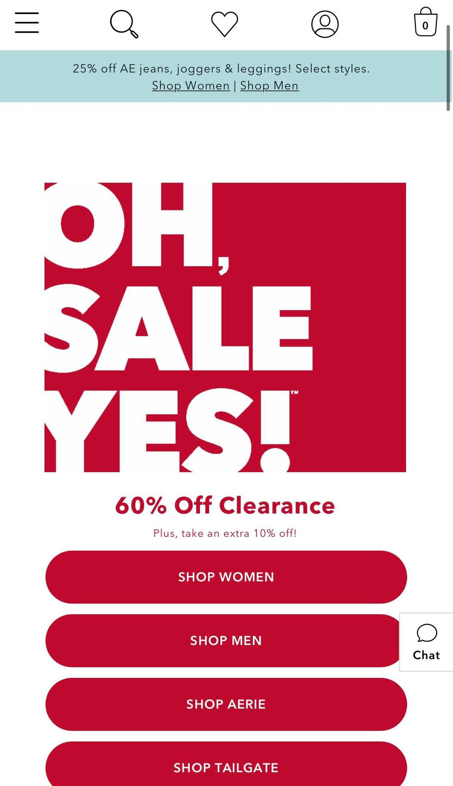
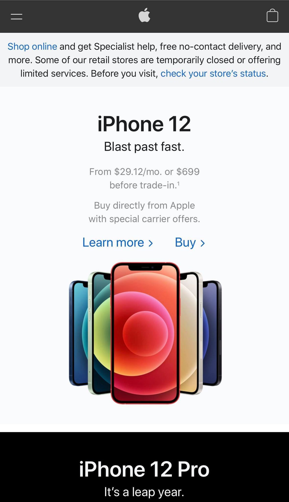

Visual Hierarchy
Dyson
dyson.com Dyson is a great example of visual hierarchy. They have used color to guide the user to the most important parts of their site. The big and colorful title tells you about their new product, and it is easy to know that if you want to see what they are selling, you need to click on "shop now," which has a very contrasting color.
PARC: Repetition
American Eagle
ae.com American Eagle does a great job using the principle of repetition. They use the same color palette throughout their website. All the buttons are red and all the text of their page has the same font. It is easy to tell that you are on the same site as you scroll down because they repeat the same pattern.
PARC: Contrast
Apple
apple.com Apple also has great visual hierarchy in their website. They use color to create contrast throughout their site. For example, they use blue so that it is easy for people to see what they are looking for. They know that people visit their site to buy or check their store status to get their latest phone, so they deliver a user-friendly experience.